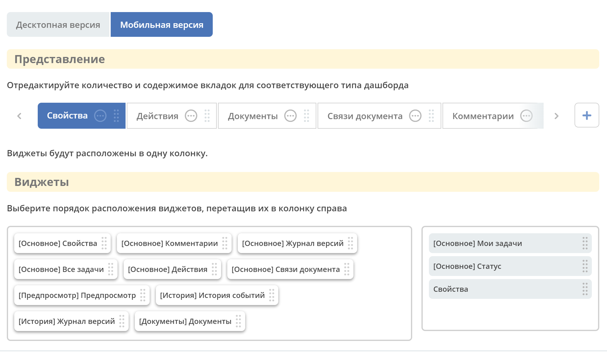

Дашборды
Содержание
Для отображения домашней страницы пользователя или информации по кейсу, или информации по сайту в ECOS предусмотрены дашборды.
Дашборд позволяет добавлять и убирать виджеты, конфигурировать каждый виджет индивидуально. См. отдельную статью виджеты
Все настройки хранятся в том же json, что и конфигурация дашборда.
Виды дашбордов
На момент написания статьи существует 3 вида дашборда:
Тип/Ключ |
Описание |
|---|---|
Case-details |
Дашборд карточки кейса - информация по документу (задачи, свойства, действия, история и др.).
Ключ dashboard’а берется из RecordRef в URL страницы и как правило он связан с типом/видом ECOS.
Формирование ключа построено по следующему правилу:
type_uuid/kind_
type_uuid
alf_alfresco_type
То есть для договоров (contracts:agreement) это будет:
1. contracts-cat-doctype-contract/contracts-cat-contract-rent
2. contracts-cat-doctype-contract
3. alf_contracts:agreement
Порядок - от более приоритетного к менее приоритетному
|
Site-dashboard |
Страница раздела, которая позволяет отображать общие данные по разделу. Например - профиль пользователя.
Ключ dashboard’а берется из RecordRef в URL страницы. На момент написания ключ формируется по правилу «site» + siteId.
Если идентификатор сайта contracts, то его приоритетный dashboardKey будет site_contracts.
|
User-dashboard |
Домашняя страница пользователя. Открывается если в URL не указано никакого recordRef.
Например:
localhost/v2/dashboardКлюч dashboard’а всегда DEFAULT если явно не задано обратного (возможно указание dashboardKey в URL)
|
Алгоритм поиска dashboard следующий:
Смотрим наличие recordRef в URL,
Если recordRef отсутствует - отправляется запрос на конфигурацию домашней страницы пользователя,
Если recordRef присутствует, то запрашиваем аттрибуты _dashboardKey[] (массив) и _dashboardType (одно значение),
Дальше перебираем каждый полученный dashboardKey и запрашиваем у сервера конфигурацию для ключа + типа,
Если на сервере конфигурации не нашлось, то пробуем следующий dashboardKey,
Если ни по одному ключу не нашелся dashboard, то запрашиваем конфигурацию по ключу DEFAULT.
Кэширование
Кеширование возможно в пределах открытой вкладки браузера:
_dashboardKey[] и _dashboardType по recordRef (они достаточно редко меняются),
Конфигурация dashboard (или её отсутствие) по dashboardKey + dashboardType.
Конфигурация дашборда
При открытии впервые карточки кейса, профиля пользователя или домашней страницы будет показан дашборд по умолчанию для соответствующего типа.
Конфигурация дашборда происходит непосредственно из выбранного типа данных.
Чтобы дополнительно конфигурировать дашборд – изменить настройки, убрать или добавить виджеты, необходимо перейти в карточку кейса, профиль пользователя или домашнюю страницу и нажать шестеренку- > «Настроить страницу»:
{kind=link}
Общая форма настройки имеет следующий вид:
{kind=link}
Разделы дашборда
«Принадлежность»
{kind=link}
В верхней части указан id дашборда и тип данных, для которого он настраивается.
Тип данных может быть изменен из доступного выпадающего списка. Например:
{kind=link}
Отдельный дашборд может быть настроен для определенного документа (если на примере выбрать тип «Договор№512», то при открытии карточки данного договора будет отображаться дашборд, сконфигурированный именно для данного документа).
При выставленном чекбоксе «Применить для всех пользователей» настроенный дашборд будет применен для всех пользователей, состоящих в первой назначенной группе по организационной структуре, открывших указанный тип данных.
«Представление»
Доступен выбор настройки для десктопной или мобильной версии ECOS.
Укажите количество и содержимое вкладок, выберите расположение и количество колонок для каждой вкладки.
{kind=link}
Только для типа дашборда Site-dashboard доступно следующее расположение (Количество колонок подстраивается под размер окна браузера):
{kind=link}
Важно
Для мобильной версии отображаются только те виджеты, которые уже были настроены для десктопной версии и несут в себе те же настройки:
{kind=link}
«Виджеты»
Созданные колонки можно заполнить доступными виджетами – перетащите виджет в необходимую колонку:
{kind=link}
Набор доступных виджетов зависит от вида дашборда:
{kind=link}
Настройки виджетов на дашбордах
Настройка виджета осуществляется в карточке каждого виджета. См. отдельную статью <Виджеты>
Информация по доступности виджета хранится в самом виджете (без участия сервера).
В конфигурации виджета в поле config.widgetDisplayCondition задается условие как json-строка. Написание условия в соответствии статье Язык предикатов
Если отсутствует условие, то виджет отображается.
Журнал «Дашборды»
Журнал расположен в разделе администратора -> Конфигурация UI - > Дашборды:
{kind=link}
Дашборд можно отредактировать, удалить, внести изменения через конфиг:
Скачать |
|
Удалить |
|
Редактировать в форме |
|
Редактировать json
|
|
Копировать |
{kind=link}
{kind=link}
{kind=link}
{kind=link}
{kind=link}
{kind=link}